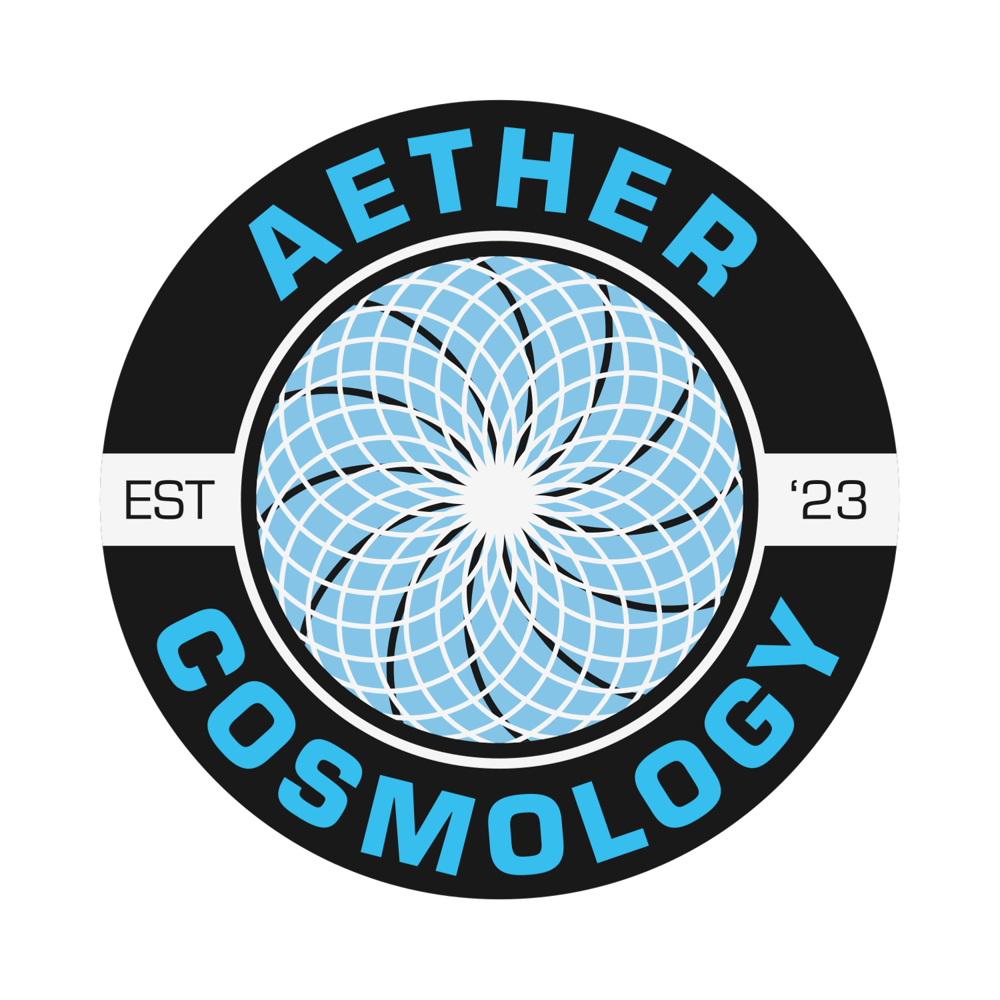

Modular port. All distances are unitless (FE radius = 1).
This is a conceptual model. The positions of the stars are based purely on kinematics; the observer's optical vault defines the limit of vision onto which the starfield is projected.
Any conceptual model that uses the lat/long graticule is no better or worse than any other projection. The graticule is internally consistent and self-referential to a fictitious observer at the center of the earth — it is that fictitious observer that binds the 60 NMi / 1° relationship to the ground positions of the stars.
"Fictitious observer" is not mutually exclusive with the conceptual model: every such model is ultimately grounded in what a single real observer sees in their own hemisphere of vision, and the graticule is simply one bookkeeping convention on top of that.
